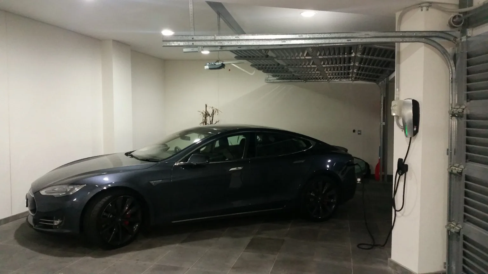

Short answer: Before installation, an electrician should understand the charger requirements, where the vehicle parks, the route back to the switchboard, the existing supply and whether the board has suitable capacity and protection.
Real installation examples
Think about the car, wall position and cable route together.


What can be involved.
Parking position
The charger position needs to work with how the vehicle is actually parked and connected.
Cable route
Distance, access and how the cable can be installed neatly all affect the job.
Switchboard
The existing board and protection should be assessed as part of the installation.
Electrical supply
The available supply and other loads help determine the appropriate charging approach.
Safety note: This guide is general information, not DIY electrical instructions. Electrical testing, repairs and alterations should be carried out by an appropriately licensed electrician.